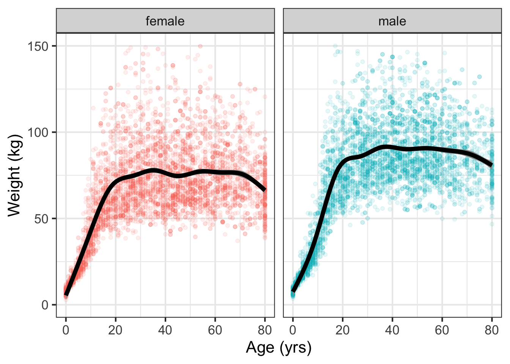
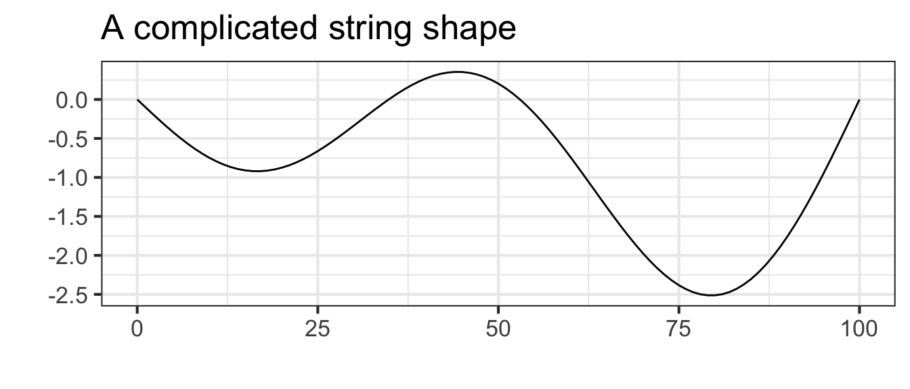
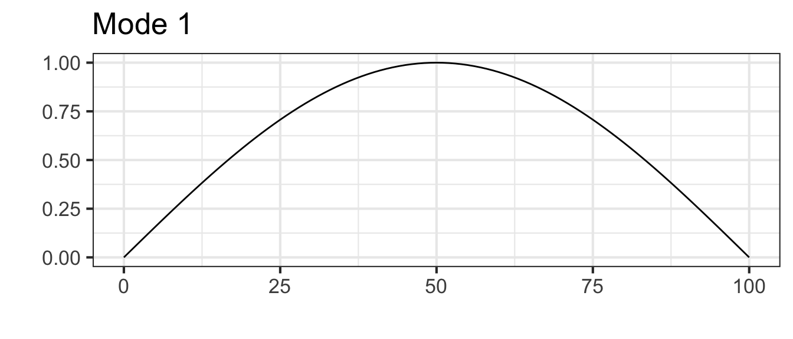
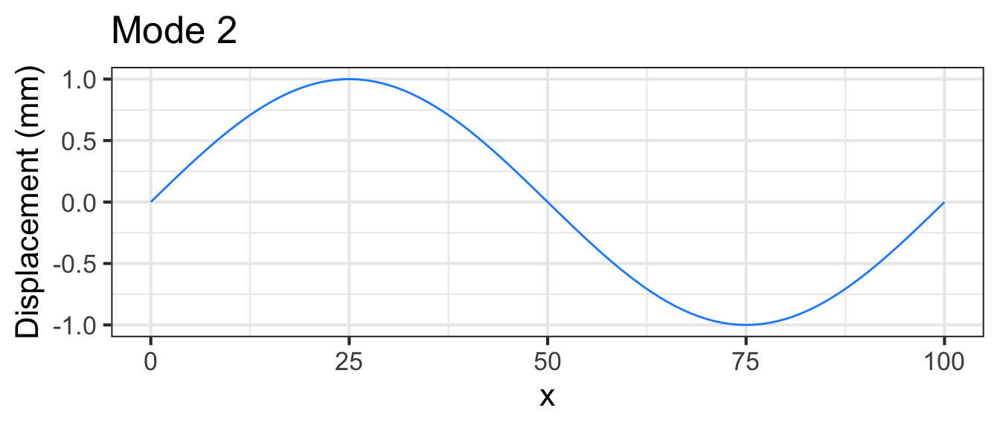
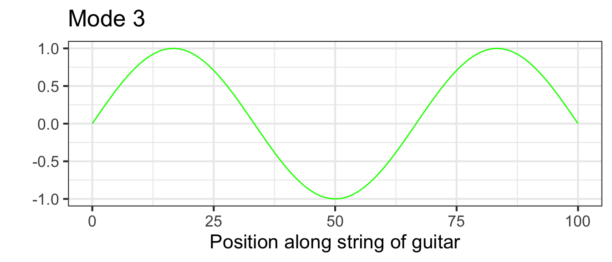

10 Functions with multiple inputs
Section 4.2 showed how to construct contour plots of functions taking two inputs. Let’s consider an example to motivate why functions taking multiple inputs are important.
Figure 10.1 shows a biological phenomenon with which we are all familiar. There are 10,000 dots, each of which corresponds to a person selected randomly from the US population. The black lines show a model function fitted to the data by methods to be presented in Chapter 11.
NHANES data frame showing weight against age for 10,000 individuals. A model function (black) fitted to the data is also shown.
We all know that children tend to get heavier as they age through childhood and puberty. It’s also true that adult women tend to be lighter than adult men, at least for those over 18 years old. The model function in Figure 10.1 takes two inputs: age and gender.
It’s also true that humans differ in weight for reasons beyond age and sex. For example, health condition affects weight, as does height, skeletal size, caloric intake, and energy expenditure, among other factors. A more complete model of weight could take such factors into account, becoming a model taking multiple inputs. Such multi-input model functions are often constructed from data using the fitting techniques you will meet in Chapter 11.
Especially in science and engineering, many functions are described by formulas. Consider, for instance, the gravitational force on an object such as a automobile or person. (Another word for this gravitational force is “weight.”) Since Isaac Newton’s time, we have known that this force is determined by the mass of the Earth, the mass of the object, and the distance of the object from the center of the Earth, that is, three inputs:
\[\text{weight}(M_\text{Earth}, M_\text{object}, \text{dist}) \equiv \frac{G M_\text{Earth} M_\text{object}}{\text{dist}^2} \tag{10.1}\]
\(G\) is a parameter called the “universal gravitational constant”: \(G = 6.6743 \times 10^{-11} \text{m}^3 \text{kg}^{−1} \text{s}^{−2}\). Thinking about the construction of Math expression 10.1 as a combination, it is a multiplication of two functions, \(g_1(x) \equiv x\) and \(g_2(x) \equiv x^{-2}\), that is,
\[ \text{weight}(M_\text{Earth}, M_\text{object}, \text{dist}) \equiv G \times g_1(M_\text{Earth}) \times g_1(M_\text{object}) \times g_2(\text{dist}) \tag{10.2}\]
It happens that the function \(g_1()\) plays two roles in \(\text{weight}()\), once with \(M_\text{Earth}\) as the input and again with \(M_\text{object}\) as the input. This use of construction by function multiplication is common in formulas. When the functions being multiplied take different inputs, the overall function becomes one that takes multiple inputs.
In other areas of quantitative work, linear combinations are a valuable way of constructing model functions with multiple inputs.
10.1 Linear combinations
Housing prices are determined by several (or many!) factors. Translating the previous sentence into the language of functions, we can say that the price is a function of multiple inputs. Plausible inputs to the function include the amount of living area and the number of bedrooms and bathrooms. The inputs may also include quality of the neighborhood, length of commute, and so on.
Often, the starting point for building a function with multiple inputs is a data frame whose variables include the function output (say, price) and the various inputs to the function.
A large fraction of work in the data-oriented quantitative sciences uses just the identity function in the linear combination. Recall that the identify function merely echos as output whatever input is provided, that is, \(\text{identity}(x) \equiv x\).
There is no point in constructing a linear combination of identity functions that take the same input. For example, the linear combination
\[4.3\ \text{identity}(x) + 1.7\ \text{identity}(x) - 2.6\ \text{identity}(x)\]
is merely a long-winded way of saying \(3.4\ \text{identity}(x)\).
Where a linear combination of identity functions becomes useful is when the inputs to the various functions are different, for example, consider this function of three inputs, \(x\), \(y\), and \(z\).
\[4.3\ \text{identity}(x) + 1.7\ \text{identity}(y) - 2.6\ \text{identity}(z)\]
By convention, we rarely write \(\text{identity}()\) preferring instead just to write the name of the input, as with
\[4.3\ x + 1.7\ y - 2.6\ z \tag{10.3}\]
Even though there are no parentheses used in Math expression 10.3, it is still a linear combination of functions. Thinking of it this way prompts consideration of what other, non-identity function might have been included, for instance, \(x^2\) or \(x\times y\).
To illustrate the use of linear combinations of identity functions (with different inputs), consider the following model of house prices:
\(\text{price}(\text{livingArea}, \text{bedrooms}, \text{bathrooms}) \equiv\)
\[\ \ \ 21000 + 105\,\text{livingArea} - 13000\, \text{bedrooms} + 26000\, \text{bathrooms}\]
where each of the coefficients is in units of dollars. These coefficients are based on data in the SaratogaHouses data frame which records the sales price of 1728 houses in Saratoga County, New York, USA, in 2006
The model function is a simple linear combination, but it effectively quantifies how different aspects of a house contribute to its sales price. The model indicates that an additional square foot of living area is worth about 105 dollars per foot2. An extra bathroom is worth about $25,000. Bedrooms, strangely, are assigned a negative value by the model.
Possibly you already understand what is meant by “an additional square foot” or “an extra bathroom.” These ideas can be intuitive, but they can be best understood with a grounding in calculus, which we turn to in Block II. For instance, the negative scalar on bedrooms will make sense when you understand “partial derivatives,” the subject of Chapter Chapter 25.
10.2 Function multiplication: f(x) times g(t)
When a guitar string is at rest it forms a straight line connecting its two fixed ends: one set by finger pressure along the neck of the guitar and the other at the bridge near the center of the guitar body. When the string is plucked, its oscillations follow a sinusoid pattern of displacement. With the right camera and lighting setup, we can see these oscillations in action:
Access the video at https://www.youtube.com/watch?v=F0NsJ7J8rYM)
The displacement of a vibrating guitar string is a function of both time and space. In the still picture, you see a slice of that function taken at a fixed moment of time. The video shows it as a function of both time and space.
For a string of length \(L\), the string displacement is a function of position \(x\) along the string and is a linear combination of functions of the form \[g_k(x) \equiv \sin(k \pi x /L)\] where \(k\) is an integer. A few of these functions are graphed in Figure 10.2 with \(k=1\), \(k=2\), and \(k=3\).




10.3 Multi-input functions as tables (optional)
In Section 7.4 we painted a picture of a function as a chain of offices. Each office has a stack of paper, all identically printed with the same number on each. Evaluating a function at an input is accomplished by finding the office corresponding to that input and collecting one of the sheets from the office’s stack of pre-printed paper.
In the sort of function just described, all the offices were along a single corridor. Such functions are said to have one input, or, equivalently, to be “functions of one variable.” To operate the function, you just need one number: the address of the office from which you will collect the output.
Many functions have more than one input: two, three, four, … tens, hundreds, thousands, millions, …. In this course, we will work mainly with functions of two inputs, but the skills you develop will be applicable to functions of more than two inputs.
What does a function of two inputs look like in our office analogy? Imagine that the office building has many parallel corridors, each with a numeric ID. To evaluate the function, you need two numeric inputs: the number of the corridor and the number of the door along that corridor. With those two numbers in hand, you locate the appropriate door, knock on it and receive the output number in return.
Three inputs? Think of a building with many floors. Each floor has a numerical ID so that you can go to the right floor guided by the first input to the function. Once on the right floor, use the second and third input to go to the right corridor and the right door on that corridor. Taken together, the three inputs identify a particular office: floor, corridor, and door.
Four inputs? A street with many three-input functions along it. Five inputs? A city with many parallel four-input streets. And on and on.
Interpolation for a function of multiple inputs is a somewhat tedious process, involving visiting several offices: the neighbors along a corridor, the neighboring corridor, the next floor up, the neighboring building along the street, and the building on the next parallel street.
10.4 Exercises
Exercise 10.01
Many printed tables are meant to be used as functions; you plug in the input values and read off the output. Here’s a table published by the National Oceanic and Atmospheric Administration for the heat index, a way of summarizing the perceived comfort (or discomfort) of summer-like weather conditions.
## Warning in normalizePath("www/heat-index.png"): path[1]="www/heat-index.png":
## No such file or directory
**Part A** What are the inputs to the heat-index function - temperature and relative humidity
- temperature and wind speed
- temperature, latitude, and longitude
The table shows three different functions:
- The heat index in \(^\circ\) F.
- The heat index in \(^\circ\) C.
- A caution warning level.
**Part B** For inputs of 70% relative humidity and $88^{\circ}$ F, what are the outputs of the three functions? - \(100^{\circ}\) F, \(38^\circ\) C, and “extreme caution”.
- \(100^\circ\) F, \(38^\circ\) C, and “danger”.
- \(100^\circ\) F, \(33^\circ\) C, and “extreme caution”.
**Part C** Holding the relative humidity at 70%, how much would the ambient temperature have to increase (from $88^\circ$ F) to change the caution-level output to "dangerous"? - Increase by \(2^\circ\) F
- Increase by \(6^\circ\) F
- Increase relative humidity to 80%.
**Part D** From a starting point of $88^\circ$ F and 70% humidity, what is the slope of the increase in heat index when moving to 80% humidity. - \(6^\circ\) F per 10 percentage points humidity
- \(6^\circ\) F
- \(6^\circ\) F per 80% humidity.
**Part E** What is the heat-index output when the inputs are 52% relative humidity and $91^\circ$ F? Choose the best answer. - \(98.4^\circ\) F
- \(101^\circ\) F
- The table does not say.
**Part F** True or false: The caution-level output could have been presented as a function of just one input, rather than needing both temperature and humidity. TRUE FALSE
Exercise 10.02
Recall the Pythagorean theorem: \(C^2 = A^2 + B^2\). Let’s write this as a function that takes as inputs the lengths of the two legs and produces as output the length of the hypotenuse.
\[\text{hypotenuse}(a, b) \equiv \sqrt{\strut a^2 + b^2}\]
This can be seen as a composition of a function \(f(x) \equiv \sqrt{x}\) into a linear combination of square functions of different inputs: \(g(a, b) \equiv a^2 + b^2\).
**Part A** What is the function $f()$? - \(f(x) \equiv a^2\)
- \(f(x) \equiv \sqrt{x}\)
- \(f(x) \equiv x^2\)
- \(f(x) \equiv +\)
**Part B** What is the function $g()$? - \(g(x) \equiv a^2\)
- \(g(a) \equiv x^2\)
- \(g(x) \equiv x^2\)
- \(g(x) \equiv a^2 + b^2\)
**Part C** There are two functions in the linear combination. What are they? \(g(a)\) and \(g(b)\) \(f(x)\) and \(g(x)\) \(f(b)\) and \(g(b)\)
**Part D** What are the scalars in the linear combination? - \(1\) and \(1\)
- \(1\) and \(-1\)
- There are no scalars.
Exercise 10.03
If you are unlucky and develop a serious ear or throat or other infection, and if the infection is bacterial and not viral, you may be prescribed antibiotics. You probably know how it goes. You go to the pharmacy to pick up a bottle of pills. There might be anywhere between 10 pills and 40. The directions will certainly tell you to make sure to finish the bottle; to take the full course of medication. It may say take a pill twice a day, or three times, or every six hours, perhaps with food.
The details of this regimen are determined largely by the details of whether food inhibits or buffers absorption of the medicine and by the efficiency by which your body metabolizes the medicine and then removes it from your blood via your liver.
Modeling this process—often called the *pharmacokinetics of the drug—is an important step in drug development. A simple but effective model of the drug concentration over time is a piecewise function: zero before you take the pill, then an exponential decay from an initial level of one unit after you take the pill.
pill <- makeFun(ifelse(t < 0, 0, exp(-k * t)) ~ t, k = log(2)/1.5)The shape of the pill() function is seen in Figure 10.3. Another part of the model is the therapeutic threshold, the minimal concentration for medical effectiveness. Keep in mind that this is a model. In reality, the drug not is absorbed instantaneously as in the model, and the medical effectiveness varies smoothly with concentration rather than being an all-or-nothing affair.
slice_plot(pill(t) ~ t, bounds(t=-2:10)) %>%
gf_hline(yintercept = ~ 0.25, color="magenta") %>%
gf_text(0.25 ~ 8, label="Therapeutic threshold", color="magenta",
vjust=0, nudge_y=0.02) %>%
gf_labs(y="Drug availability", x = "Time (hrs)")
The critical features of the model are the half-life of the drug in the body and the therapeutic threshold, both of which depend on the particular drug in question.
**Part A** What is the half life of the drug depicted in the Figure @fig-pharma1? 60 minutes 90 minutes 120 minutes 180 minutes
Figure 10.3 shows the availability from a single pill. The goal of taking multiple pills, spread out over time, is to keep the drug availability above the therapeutic threshold for an extended time, e.g. 10 days. There are three parameters to the therapy: how often you take a pill, and the dose delivered by a single pill, and the medicine’s half-life.
**Part B** Occasionally, the prescription directs you to take a single pill once a day. Suppose the half-life of the medicine is 3 hours. How big would the dose `A` need to be to keep the availability above a threshold of 0.25 for a 24-hour period? 2 units 16 units 64 units 1024 units
Let’s explore a familiar-sounding directive: Take one pill every six hours. We can model this by a linear combination of time-shifted pill() functions. Each pill provides a dose of size A.
six_hours <-
makeFun(A*pill(t, k) + A*pill(t-6, k) +
A*pill(t-12, k) + A*pill(t-18, k) +
A*pill(t-24, k) ~ t,
k=log(2)/3, A = 1)
slice_plot(six_hours(t) ~ t, bounds(t=-1:24))
The graph shows that the drug is above the therapeutic threshold (0.25) for the entire first day.
From the graph of drug availability versus time, do you think continuing the one-pill-every-6-hours regimen will continue to keep the drug level over the therapeutic threshold for the remainder of the course of treatment? Explain why or why not.
Let’s switch to an one-pill every 8 hour regimen, the pills being taken at midnight, 8am, and 4pm, …
How big a dose
Awill be needed to keep the drug availability above the therapeutic threshold for the entire course of treatment? (Hint: Construct a function analogous tosix_hours()and plot out the drug availability over the 24 hours of the first day. Then vary the doseAuntil you find the minimum dose that keeps the availability over the threshold of 0.25 for the entire day.)
Suppose the instructions were to take 2 pills when you start treatment and then an additional pill every 8 hours. How big a dose
Awould be needed to keep the drug availability above the therapeutic threshold for the entire course of treatment?
Which of the three regimens described (6-hour, 8-hour, 8-hour-double-first-dose) involves the smallest total dose? (The total dose is the sum of the doses for each pill administration.)